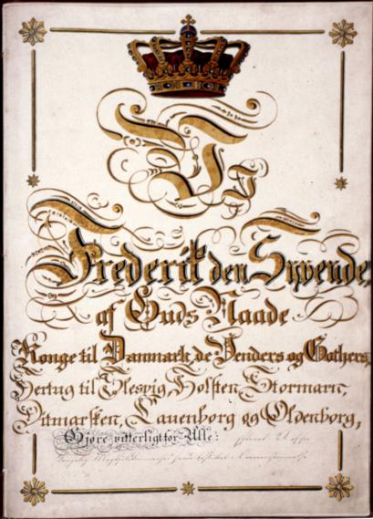
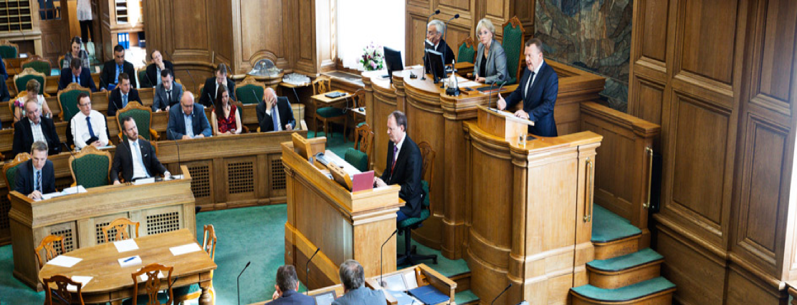
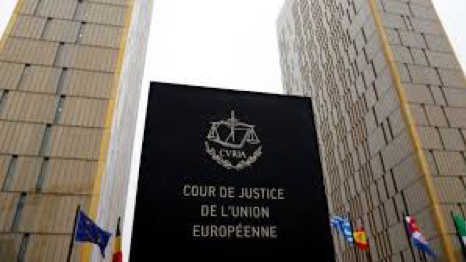

Kapitel 1 Retskilder retssystemet og juridisk-metode
1.1 Grundloven om Danmarks forfatning

Af de mere end 1.300 love, vi har i Danmark, er der én lov, en retskilde, der er hævet over alle de andre, nemlig grundloven. Grundloven er Danmarks forfatning, dvs. den lov, der beskriver de grundlæggende regler for samfundet. I Danmark fejrer man hvert år grundlovens fødselsdag 5. juni. Men hvordan blev grundloven egentlig indført? Fra 1660 til 1848 havde Danmark enevælde og i 1700-tallet begyndte modstanden mod enevældet at ulme rundt om i Europa. Befolkningerne stillede krav om, at folket skulle være med til at bestemme, hvordan deres land skulle styres, og flere steder blev monarkiet væltet og erstattet af en republik. Efterhånden som den internationale udvikling tog fart, erkendte Kong Christian den 8., at Danmark også måtte have en fri forfatning. Da han døde, gjorde hans søn, Frederik den 7., arbejdet med forfatningen færdig.
1.1.0.1 Video om den danske grundlov
1.2 Rettigheder og pligter
Grundloven beskriver bl.a. den enkelte borgers rettigheder og pligter, f.eks. at der er ytringsfrihed, religionsfrihed og værnepligt. I grundloven står der også, at den øverste magt i Danmark skal deles mellem den lovgivende, den udøvende og den dømmende magt. I grundloven kan du læse om magtens fordeling i samfundet. Om Folketinget som den demokratisk valgte forsamling, der vedtager love, der gælder for os alle. Om regeringen, der skal sikre, at lovene bliver overholdt af os borgere og af de myndigheder, der skal sørge for, at vi for eksempel har gode skoler, sygehuse og biblioteker. Om domstolene, der er uafhængige af regering og Folketing, fordi de skal dømme i konflikter mellem borgerne indbyrdes og mellem myndigheder og borgere.
Grundloven handler også om de rettigheder, du har som borger. Vi kalder dem friheds- eller menneskerettigheder. Den ene slags frihedsrettigheder er ytringsfriheden, retten til at forsamles og demonstrere for dine synspunkter og retten til at oprette foreninger og til at være medlem af en forening. Grundloven sikrer også, at du har ret til at være medlem af et politisk parti og være politisk aktiv – også selv om det går imod regeringens eller flertallets synspunkter. Disse rettigheder skal sikre, at demokratiet kan fungere. Grundlovens regler om folkeafstemninger og valg til Folketinget ville for eksempel ikke være meget værd, hvis vi ikke havde ret til at diskutere politiske spørgsmål og sige vores mening. Den anden slags frihedsrettigheder er reglerne om den personlige frihed og om ejendomsretten og boligens ukrænkelighed. Disse regler skal først og fremmest beskytte borgerne mod overgreb fra statsmagten. Hvis du bliver anholdt af politiet, har du for eksempel krav på, at en dommer tager stilling til din sag inden 24 timer. Hvis myndighederne vil undersøge din bolig, dine private papirer eller din pc, skal de som hovedregel have en dommers tilladelse først. – Og hvis myndighederne vil tage dit hus for at rive det ned, fordi der skal bygges en motorvej eller en jernbane hen over grunden, ja så skal du have en erstatning, der svarer til husets og grundens værdi. Grundloven sætter på den måde grænser for, hvordan staten kan blande sig i vores privatliv. Grundloven skal sikre stabile rammer om det politiske liv og de politiske kampe om magten. Og grundloven skal sikre, at borgernes rettigheder ikke krænkes. Begge dele sikres ved, at grundloven er mere vanskelig at ændre end andre love. Den danske grundlov er kun blevet ændret få gange, siden den blev vedtaget for mere end 160 år siden. Og sproget i mange af paragrafferne er ikke blevet moderniseret siden. Derfor er der i dette hæfte nogle forklarende kommentarer til de enkelte paragraffer.
1.3 Magtadskillelseslæren i grundlovens § 3
Grundlovens § 3 har følgende ordlyd: ”Den lovgivende magt er hos kongen og Folketinget i forening. Den udøvende magt er hos kongen. Den dømmende magt er hos domstolene”.
Magtens tredeling
- Lovgivende magt: Folketinget
- Dømmende magt: Domstolene
- Udøvende magt: Regering/ministerier, forvaltningen, politiet m.fl.
- Gensidig kontrol
- Magtbalance
Bestemmelsen handler om magtens tredeling i den lovgivende, den udøvende og den dømmende magt. Magten er delt mellem forskellige myndigheder (Folketing, regering og domstole) for at undgå, at al magt samles hos én myndighed. Det ville kunne føre til magtmisbrug.
Ifølge grundloven har dronningen og Folketinget i fællesskab magten til at lovgive. Men helt sådan er det ikke i virkeligheden. I praksis er det nemlig regeringen og Folketinget, som bestemmer, hvordan lovene skal se ud. Dronningen skriver dem bare under. Dronningen skal føre lovene ud i livet – hun har den udøvende magt. I dag betyder det blot, at hun rent formelt udnævner ministrene i en regering. Derefter er det i praksis ministrene og deres ministerier, der sørger for, at lovene bliver overholdt.
Dronningen har ingen indflydelse på, hvem der skal være ministre. Det bestemmer statsministeren. Hun har heller ingen indflydelse på, hvilke partier der skal danne regering. Det handler grundlovens §§ 12-15 bl.a. om.
Domstolene har magten til at dømme. De afgør, om folk har overtrådt landets love og skal straffes. Og de tager stilling i sager, hvor borgere har indbyrdes konflikter. Domstolene afgør også, om ministerier og kommuner har overtrådt lovene, og om lovene overholder grundloven.
I 1999 fastslog Højesteret, jf. U 1999.841 H, at den såkaldte Tvindlov var i strid med grundlovens § 3. Tvindlovens bestemmelse om, at en række Tvindskoler ikke længere skulle have penge fra det offentlige, var derfor ugyldig.
1.4 Folketinget som den lovgivende magt
Folketinget er Danmarks parlament. Her vedtages al lovgivning i Danmark. Folketingets grundlæggende opgaver og nogle af arbejdsformerne er beskrevet i grundloven. Andre metoder er praksisser, der har udviklet sig gennem de snart 170 år, Folketinget har eksisteret. Folketinget er den lovgivende magt. Folketinget og regeringen er de eneste, der kan fremsætte lovforslag, dvs. komme med forslag til nye love og lovændringer. Den lovgivende magt er Folketinget og regering, men det er kun Folketinget, der kan vedtage lovforslag. Grundloven beskriver fordelingen af magten mellem Folketinget (lovgivende), regeringen (udøvende og lovgivende) og domstolene (dømmende), også kaldet magtens tredeling. Magten i samfundet er delt i 3 for at forhindre, at der sker magtmisbrug.
1.4.1 Parlamentarisk kontrol og lovgivning i Folketinget
Folketinget har 3 hovedopgaver:

- At behandle lovforslag og vedtage landets love
- At behandle og vedtage statens årlige budget, finansloven
- At føre kontrol med regeringens magtudøvelse
For at kunne løfte de opgaver kræves det, at folketingsmedlemmerne ved, hvordan det politiske arbejde skal foregå. Reglerne for, hvordan folketingsmedlemmerne skal samarbejde, og hvordan lovgivningsprocessen er, står beskrevet i Folketingets forretningsorden. Reglerne kan ændre sig over tid, fordi samfundet ændrer sig, men de fleste af reglerne har mange år på bagen.
1.4.2 Lovforslag

Love regulerer, hvordan vi skal leve sammen i Danmark, hvad vi skal drive i fællesskab – f.eks. folkeskolen og sygehusene – og hvordan det fælles skal være indrettet. Lovgivning handler om, hvad man skal som borger, og hvad man ikke må, herunder hvad der er strafbart. Lovteksterne skal derfor skrives så præcist, at borgerne ikke er i tvivl om de fælles spilleregler i samfundet.
Nye lovforslag kan fremsættes af regeringen og folketingsmedlemmerne (folketingsbeslutninger). Regeringen fremsætter de fleste lovforslag
Lovforslag tager lang tid at skrive, og det kræver stor juridisk indsigt. Derfor er det regeringen, der fremsætter de fleste lovforslag. For regeringen har mange embedsmænd i ministerierne til at hjælpe sig, mens partierne uden for regeringen, oppositionen, har færre til at hjælpe sig – de har kun medarbejdere i deres gruppesekretariater og i Folketingets Administration.
Ideer til nye love kommer primært fra regeringen, men kan også komme fra:
- Folketingsmedlemmerne
- Interesseorganisationer, erhvervslivet, foreninger m.v.
- Sager i medierne
- Borgere, der henvender sig til et folketingsmedlem eller et parti med en sag
Inden et lovforslag fremsættes i Folketingssalen, har det som regel været igennem en længere process i ministerierne.
1.5 Folketingets kontrol med regeringen
 Ud over at lovgive har Folketinget en anden og lige så vigtig rolle i demokratiet. Det er at kontrollere, om regeringen – den udøvende magt ‒ fører Folketingets love ud i livet, som de var tænkt, og om der sker magtmisbrug. Det kalder man parlamentarisk kontrol.
Ud over at lovgive har Folketinget en anden og lige så vigtig rolle i demokratiet. Det er at kontrollere, om regeringen – den udøvende magt ‒ fører Folketingets love ud i livet, som de var tænkt, og om der sker magtmisbrug. Det kalder man parlamentarisk kontrol.
1.5.1 Den kritiske opposition
Parlamentarisk kontrol med regeringen er en meget vigtig opgave i Folketinget, hvor Folketinget kontrollerer, hvordan regeringen fører lovene ud i livet, og om regeringen fører en politik, der i hovedtræk bliver støttet af et flertal i Folketinget. Søgelyset rettes ofte mod ministrene i regeringen. For det meste går det stille af, men situationen kan også spidse til, så regering og Folketing kommer til at stå stejlt over for hinanden. I praksis er det oppositionen – de partier i Folketinget, som er imod regeringens politik – der udfører den parlamentariske kontrol. Det er dem, der har den største interesse i at være kritiske over for regeringens arbejde og afsløre, om der sker magtmisbrug. Oppositionen undersøger bl.a., om regeringen:
- Virkeliggør lovens indhold og gør det på den måde, som regeringen har lovet
- Overholder statsbudgettet
Folketingsmedlemmerne fra oppositionspartierne finder den parlamentariske kontrol af regeringens magtudøvelse vigtig. Oppositionen har en politisk fordel i at finde fejl og mangler ved en regering, den ikke er enig med, og det giver oppositionspartierne mulighed for at forklare vælgerne, hvordan deres politik er anderledes end regeringens.
1.5.2 Udvalgsarbejdet i Folketinget
Arbejdet i Folketinget foregår både i Folketingssalen og i Folketingets udvalg. Udvalgene arbejder med hvert deres fagområde og behandler både lovgivning og den brede kontrol med regeringens arbejde.
1.6 Regeringen den udøvende magt
Statsministeren er regeringens chef og den der bestemmer, hvem der skal være minister i regeringen. Regeringen laver landets love, mens Folketinget vedtager dem. Ministrene er som regel også medlemmer af Folketinget, men det er ikke et krav.
1.6.1 Sådan dannes en regering
Grundloven giver dronningen magt til at udpege statsministeren og de øvrige ministre. Men i praksis er det et flertal i Folketinget, der er afgørende for, hvem der skal være statsminister. Statsministeren sætter så sit ministerhold og danner sin regering.
1.6.2 Statsministeren vælges og nedsætter sin regering
Folketingsvalg skal afholdes mindst én gang hvert 4. år. Det står i grundloven. Statsministeren kan dog til enhver tid udskrive folketingsvalg, så der kan sagtens gå mindre end 4 år mellem hvert valg.
Når valget er slut og mandaterne fordelt, er det nye Folketing fundet. Så skal man i gang med at finde ud af, hvem der skal være statsminister og danne regering.
1.6.3 Negativ parlamentarisme
Den siddende statsminister fortsætter, hvis der ikke er et flertal imod ham eller hende - dvs. 90 eller flere ud af de 179 folketingsmedlemmer. Det kaldes negativ parlamentarisme. Taber regeringen valget, skal der findes en ny statsminister og en ny regering.
1.6.4 Dronningen udnævner formelt den nye regering
Den siddende statsminister skal, i samarbejde med dronningen, finde ud af, hvilken statsministerkandidat der har den bredeste opbakning hos det nye folketingsmedlemmer. Det kaldes en dronningerunde. Når statsministeren har fundet sine ministre, udnævner dronningen formelt regeringen på Amalienborg. Regeringen kommer bagefter ud på slotspladsen. Her præsenterer statsministeren sin nye regering for danskerne.
1.6.5 Sådan arbejder regeringen

Regeringens ministre leder via deres ministerier landet efter de love, Folketinget har vedtaget. Regeringen har stor indflydelse på de love, der vedtages i Folketinget, da det er regeringen, der kommer med langt de fleste forslag til nye love.
1.6.6 Regeringen fremsætter lovforslagene
Den udøvende magt ligger hos regeringen. Det står i grundloven. Regeringen har ret og pligt til at gennemføre de regler og love, som Folketinget vedtager, så lovene bliver til virkelighed i samfundet. Lovgivningsarbejdet har regeringen også stor indflydelse på. Det er regeringen, der forbereder og foreslår langt de fleste nye love og ændringer i eksisterende love. Regeringen er ansvarlig for hele processen med forberedelse af lovforslagene inden de når til Folketinget, herunder at lægge de overordnede planer, drive de politiske forhandlinger, skrive lovudkast og sende det i høring. Når regeringen foreslår en lov, kaldes det, at den fremsætter et lovforslag. Både regeringen og medlemmerne af Folketinget kan fremsætte lovforslag – men de fleste kommer fra regeringen.
1.6.7 Lovkataloget viser regeringens mål
Når en ny regering tiltræder, vil de partier, der indgår i regeringen, sammen skrive et regeringsgrundlag. Et regeringsgrundlag er en slags politisk programerklæring, som signalerer, hvilken politik regeringen gerne vil gennemføre i den kommende regeringsperiode.
Lovkataloget er et redskab for regeringen til at omsætte den overordnede politik til konkrete initiativer. Regeringen forsøger at gøre de politiske mål til virkelighed via nye love. De lovforslag, regeringen regner med at kunne få flertal for, bliver præsenteret i regeringens lovkatalog eller lovprogram, som udarbejdes og præsenteres for et folketingsår ad gangen. Lovkataloget kan findes på Statsministeriets hjemmeside og giver et pejlemærke for årets politiske beslutninger.
Den formelle baggrund for lovkataloget er, at der i grundlovens § 38 står beskrevet, at statsministeren skal lave en åbningsredegørelse, når et nyt folketingsår starter. Åbningsredegørelsen består både af en mundtlig og en skriftlig del. Den mundtlige del er åbningstalen, som statsministeren holder på åbningsdagen, mens den skriftlige del er lovkataloget.
1.6.8 Statsministeren
 Statsministen er regeringens chef. Det er statsministeren, der bestemmer, hvem der skal være ministre, og hvilke ministerier der skal være.
Statsministen er regeringens chef. Det er statsministeren, der bestemmer, hvem der skal være ministre, og hvilke ministerier der skal være.
1.6.9 Statsministeren har stor magt
Statsministerposten er landets højeste ministerpost. En statsminister har en særlig stor magt og et særlig stort ansvar. Det er f.eks. kun statsministeren, der kan bestemme:
- hvem der skal være minister
- hvilke ministre der eventuelt skal afskediges/udskiftes
- hvornår der skal være folketingsvalg inden for den 4-årige regeringsperiode
Statsministeren fører tilsyn med sine ministre og fordeler opgaver og fagområder imellem dem.
1.6.10 Ministrene
Regeringen, og dermed ministrene, har den udøvende magt i Danmark. Det vil sige, at ministrene har det overordnende ansvar for, at de love, som Folketinget vedtager, føres ud i livet. Ministrene har meget magt og ansvar, og en af deres vigtigste opgaver er at foreslå ny lovgivning.
Regeringens ministre har hver sit fagområde: Kulturministeren har ansvar for kulturområdet, skatteministeren for skatteområdet osv. De fleste ministerområder ligger nogenlunde fast – f.eks. er der i praksis altid et Justitsministerium, et Finansministerium osv. Men statsministeren kan ændre ministrenes fagområder eller oprette nye ministerier, hvis statsministeren ønsker at begrænse, fremhæve eller styrke bestemte fagområder. F.eks. blev der efter valget i november 2007 som noget nyt udnævnt en minister for klima og energi.
1.6.11 Ministrenes opgaver
At foreslå ny lovgivning er en af ministrenes fornemste opgaver. Lovforslagene bliver forberedt i ministerierne, som har mange medarbejdere til bl.a. at skrive lovforslag.
En ministers arbejde består bl.a. i at:
- forhandle indholdet af nye love på plads
- svare på spørgsmål fra Folketinget, f.eks. fra Folketingets udvalg
- svare på henvendelser fra borgere og organisationer m.fl.
- informere offentligheden om ministeriets arbejde, bl.a. i form af hjemmesider, interviews og pressemeddelelser
- træffe beslutninger i ministeriet og sørge for, at ministeriet arbejder effektivt
- samarbejde med internationale parter, herunder EU
- deltage i ugentlige ministermøder med resten af regeringens ministre
- deltage i statsrådsmøder og regeringens udvalg
- deltage i regeringsseminarer
1.7 Domstolene
Uafhængige domstole er en grundlæggende del af magtens tredeling i et demokrati. Sådan er det også i Danmark. Grundloven siger nemlig, at domstolene alene har den dømmende magt.1.7.1 Domstolenes opgaver
Domstolene er den dømmende magt i Danmark. De afgør, om personer har overtrådt landets love, og afgør uoverensstemmelser mellem to parter i civile sager.
Alle har ret til en retfærdig rettergang. Det står i den europæiske menneskerettighedskonvention. Det betyder bl.a., at en retssag skal afgøres inden for en rimelig tidsperiode og ved en domstol, der er uafhængig og upartisk.
Domstolenes uafhængighed er bestemt i den danske grundlov. Grundloven deler nemlig magten i tre for at forhindre magtmisbrug, jf. grundlovens § 3:
- den lovgivende magt (Folketinget og regeringen)
- den udøvende magt (regeringen)
- den dømmende magt (domstolene)
Det er Folketinget, der vedtager Danmarks love. Regeringen regerer ud fra lovene. Men hverken Folketinget eller regeringen kan dømme på baggrund af de vedtagne love. Kun domstolene kan afgøre, hvordan lovene skal fortolkes, og dømme ud fra dem. Dommerne må kun rette sig efter, hvad der står i loven og det forarbejde, der ligger til grund for den. De må ikke lade sig påvirke af Folketinget, regeringen, pressen eller andre, når de dømmer i en sag.
1.7.2 Byret, landsret og Højesteret
Domstolene i Danmark har 3 instanser: byret, landsret og Højesteret. Alle retssager begynder som udgangspunkt i en byret. Almindelige borgere kan være med til at dømme i straffesager som domsmænd eller nævninge, afhængigt af sagens karakter. De almindelige domstole behandler civile sager og straffesager.
- Civile sager er sager, som anlægges ved domstolene for at få afgjort en uenighed mellem 2 parter. Som eksempler på civile sager kan nævnes sager om mangler ved fast ejendom, opsigelse af en arbejdstager, boligretssager, ægteskabssager, faderskabssager og sager om adoption.
Straffesager er først og fremmest sager, hvor retten skal træffe beslutning, om en person skal straffes for en overtrædelse af loven. Afgørelser, der træffes i forbindelse med politiets efterforskning, er også straffesager. Det kan f.eks. være afgørelser om varetægtsfængsling, beslaglæggelse og ransagning.
- Byretterne behandler ligeledes skiftesager, foged- og auktionssager.
Tinglysning af dokumenter foregår ved Tinglysningsretten.
Alle sager kan som udgangspunkt behandles ved 2 retsinstanser, f.eks. ved byret og landsret. Visse mindre sager kan dog normalt kun behandles ved én instans, byretterne, uden mulighed for appel til landsretten.
1.7.3 Højesteret
Danmark har én højesteret. Den ligger ved Christiansborg Slot i København. Højesteret er den øverste domstol i Danmark. Her afgøres f.eks. sager, der har betydning for, hvordan lignende sager skal afgøres, eller sager, der har særlig samfundsmæssig interesse. Højesteret er en appeldomstol, som behandler domme og kendelser, der er afsagt af Østre Landsret, Vestre Landsret eller Sø- og Handelsretten. Man kan altså ikke anlægge sag direkte ved Højesteret. Højesteret behandler både civile sager og straffesager og fungerer som tredje instans i skifte-, foged- og tinglysningssager. Ved Højesteret behandles også sager, som Procesbevillingsnævnet har tilladt indbragt for retten. Det drejer sig om sager af særlig principiel betydning, f.eks. sager, som kan have betydning for afgørelse af en række andre sager, eller om sager af særlig samfundsmæssig interesse. I straffesager kan Højesteret ikke tage stilling til skyldsspørgsmålet. Særlige forvaltnings- eller forfatningsdomstole anvender man i mange andre EU-lande. Det gør man ikke i Danmark. Her er det de almindelige domstole – i praksis Højesteret – der undersøger, om de afgørelser, myndighederne træffer, er lovlige, eller om en lov er i strid med grundloven.
1.7.4 Landsretterne
Østre Landsret i Bredgade 55, København K
I Danmark findes der 2 landsretter: Vestre Landsret i Viborg og Østre Landsret i København. Landsretten behandler primært appelsager fra byretten. Hvis byretten f.eks. mener, at en sag er af principiel karakter, kan den også henvise sagen direkte til behandling i landsretten.
Østre Landsret i Bredgade 55, København K
Ved landsretterne er ansat ca. 100 landsdommere. Hver landsret ledes af en præsident. Vestre Landsret ligger i Viborg og behandler sager fra Jylland. Østre Landsret ligger i København og behandler sager fra resten af landet, Færøerne og Grønland. Landsretterne er delt i afdelinger. Til hver afdeling hører tre landsdommere, som i fællesskab afgør alle afdelingens sager, både straffesager og civile sager. I nogle straffesager medvirker nævninger, i andre domsmænd. I enkelte sager deltager personer, der er særligt sagkyndige på et specielt område. Vestre og Østre Landsret er appelinstanser for byretterne.
1.7.5 Sø- og Handelsretten
Sø- og Handelsretten ligger i København. I Sø- og Handelsretten er ansat en præsident, 2 vicepræsidenter, 2 dommere og et antal sagkyndige medlemmer. De sagkyndige medlemmer har særlig kendskab til sø- og handelsforhold. Sø- og Handelsretten behandler bl.a. sager, hvor kendskab til sø- og handelsforhold er af væsentlig betydning. Sø- og Handelsretten behandler også sager om konkurs, rekonstruktion og gældssanering m.v. fra hele Storkøbenhavn.
1.7.6 Den Særlige Klageret
Den Særlige Klageret ligger i København samme sted som Højesteret. Klageretten er sammensat af en højesteretsdommer, en landsdommer, en byretsdommer, en advokat og en universitetslærer i retsvidenskab eller anden jurist med særlig videnskabelig uddannelse. Den Særlige Klageret træffer afgørelser i disciplinære sager vedrørende dommere og andet juridisk personale ansat ved domstolene, herunder også ansatte på Færøerne og i Grønland.
Klageretten behandler derudover sager om genoptagelse af straffesager og udelukkelse af forsvarere fra straffesager.
1.7.7 Byretten
Danmark har 24 byretter. De er fordelt over hele landet. Byretten behandler som nævnt bl.a.:
- civile sager
- straffesager
- tinglysningssager
- skiftesager
1.7.8 Byretterne
Danmark er inddelt i 24 såkaldte byretskredse. Byretterne ledes af en byretspræsident. Byretterne behandler civile sager, straffesager, notarialforretninger og skiftesager. Alle sager begynder som udgangspunkt i byretten. Byretterne kan i en række tilfælde henvise en civil sag til behandling ved landsretten. Det gælder f.eks., hvis sagen er af principiel betydning, eller sagen kan få væsentlig betydning for andre end parterne.
1.7.8.1 Video hvordan fungerer byretten?
1.7.8.2 Video en sag kommer på tværs
Saglig kompetence: Hvilken ret/domstol skal behandle sagen?
Stedlig kompetence: Værneting – Hvor i landet skal sagen anlægges? Hvis der ikke er lavet en værnetingsaftale mellem de stridende parter, skal en retssag som hovedregel anlægges ved sagsøgtes hjemting (bopæl/kendt opholdssted) Værneting er således et spørgsmålet om, hvor en retssag skal anlægges og føres. Ved hvilken domstol en sag skal anlægges, hvis der opstår uenighed mellem aftaleparter med bopæl i hver sit EU-land, afhænger af, om der er indgået en værnetingsaftale og af EU-Domsforordningen. Supplerende værneting, f.eks.:
- Virksomhedsværneting
- Ejendomsværneting
- Opfyldelsesværneting
- Forbrugerværneting
- Deliktsværneting
| Paragraf | Indhold |
|---|---|
| §239 | Regioner og kommuner har hjemting i den retskreds, hvor hovedkontoret ligger. |
| §240 | Sager mod staten: Staten har hjemting i den retskreds, hvor den myndighed, som stævnes på statens vegne, har kontor. |
| §241 | Ejendomsværneting: Sager vedrørende rettigheder over fast ejendom, kan anlægges ved retten på det sted, hvor ejendommen ligger. |
| §242 | Opfyldelsesværneting: Sager om kontraktsforhold kan anlægges ved retten på det sted, hvor den forpligtelse, der ligger til grund for sagen, er opfyldt eller skal opfyldes. Bestemmelsen finder ikke anvendelse på pengekrav, medmindre kravet er opstået under ophold i retskredsen under sådanne omstændigheder, at det skulle opfyldes, inden stedet forlades. |
| §243 | Deliktsværneting: Sager, hvorunder der påstås straf, erstatning eller oprejsning i anledning af retskrænkelser, kan anlægges ved retten på det sted, hvor retskrænkelsen er foregået (skadestedet). |
| §244 | Forbrugerværneting: I sager om forbrugeraftaler, som ikke er indgået ved personlig henvendelse på den erhvervsdrivendes faste forretningssted, kan forbrugeren anlægge sag mod den erhvervsdrivende ved sit eget hjemting. |
| §246 |
Sagsøgte har ikke dansk hjemting: Stk. 1: Sager mod personer, selskaber, foreninger, private institutioner og andre sammenslutninger, der ikke har hjemting i Danmark, kan anlægges her i landet, for så vidt nogen ret efter bestemmelserne i §§ 237, 238, stk. 2, 241, 242, 243 og 245 kan anses som værneting i sagen. Opholdsværneting: Stk. 2: Kan ingen ret efter stk. 1 anses som værneting i sagen, kan sager vedrørende formueretsforhold mod de i stk. 1 nævnte personer anlægges ved retten på det sted, hvor de ved stævningens forkyndelse opholder sig. Godsværneting: Stk. 3: Sager vedrørende formueretsforhold mod de i stk. 1 nævnte personer og sammenslutninger kan endvidere, hvis der ikke er værneting efter reglen i stk. 1, anlægges ved retten på det sted, hvor den pågældende person eller sammenslutning på tidspunktet for sagens anlæg har gods, eller hvor det gods, kravet angår, befinder sig på tidspunktet for sagens anlæg. Afværges arrest i gods gennem sikkerhedsstillelse, betragtes sikkerhedsstillelsen som gods, der befinder sig på det sted, hvor arrestbegæringen er eller i givet fald skulle være indgivet. |
1.7.9 Processuelle grundbegreber
- Forhandlingsprincippet: Sagsøger og sagsøgte har selv ansvaret for sagens bevisførelse. Retten kan opfordre parterne til at føre et bestemt bevis, men parterne er ikke forpligtet til at følge rettens opfordring.
- Bevisumiddelbarhedsprincippet: Beviser skal føres umiddelbart foran dommeren.
- Den frie bevisbedømmelse: Retten har frihed til på objektivt grundlag, at vurdere og afgøre, hvad der findes bevist under sagen, og hvilke beviser der vægter tungere end andre.
- Bevisbyrde: Den som påstår noget under en retssag, skal bevise at han eller hun har ret og har dermed bevisbyrden for sin påstand (kaldet en ”ligefrem bevisbyrde” som er hovedreglen i dansk ret).
1.7.9.1 Video: Retssikkerhed. Hvordan kan domstolene hjælpe mig?
1.7.10 Civilretssagens forløb
Parterne: Sagsøger og sagsøgte Sagens forberedelse: Stævning og svarskrift
- Evt. forberedende retsmøde
- Evt. syn og skøn
- Replik og duplik
- Hovedforhandling
Småsagsprocessen:
- Sager under 50.000 kr.
- Formål: Enklere, hurtigere og billigere
1.7.11 Udenretlig tvistløsningsorganer
Klage- og ankenævn som der har betydning for den finansielle branche:
- Fx Forbrugerklagenævn, Det Finansielle Ankenævn (Sammenlægning pr. 1. februar 2019 af Pengeinstitutankenævnet, Realkreditankenævnet og Ankenævnet for investeringsfonde) Ankenævnet for Forsikring, Ankenævnet for Finansieringsselskaber og Klagenævnet for Ejendomsformidling
- Sagsbehandling efter officialmaksimen, dvs. nævnets sekretariatet skal oplyse klagesagen
- Mediation i det offentlige forbrugerklagenævn Retsmægling Voldgift
- Voldgiftsloven – voldgiftsklausul i aftale
- Ofte hurtigere sagsbehandling end alm. domstole
- Dommere med særligt fagkundskab
- Sagen er ikke offentlig
- Ikke mulighed for anke til højere instans
1.7.12 Tinglysningsretten
Tinglysningsretten, som ligger i Hobro, blev etableret den 1. januar 2007 med en præsident som øverste chef. Fra den 8. september 2009 er håndteringen af hele tinglysningsområdet samlet i Tinglysningsretten. Byretterne tinglyser altså ikke længere dokumenter. Tinglysning er nu en digital proces, der foregår fra hjemmesiden www.tinglysning.dk. Information og vejledning kan findes på www.tinglysningsretten.dk
1.7.13 Procesbevillingsnævnet
Procesbevillingsnævnet blev oprettet pr. 1. januar 1996 med det formål at behandle ansøgninger om 2. og 3. instansbevillinger i civile sager og straffesager. Siden den 1. januar 2007 har Procesbevillingsnævnet endvidere haft til opgave at behandle klager over Civilstyrelsens afslag på ansøgninger om fri proces.
1.7.13.1 Appeltilladelse
En appeltilladelse indebærer, at en sag, der ikke ellers ville kunne ankes eller kæres, kan indbringes for en højere retsinstans. Appeltilladelse forudsætter, at sagen rejser spørgsmål af principiel karakter, eller at særlige grunde taler for tilladelse.
1.7.13.2 Fri proces
Fri proces indebærer i grundtræk, at den pågældende får en advokat beskikket til at føre sagen, og at statskassen betaler sagens omkostninger, herunder retsafgifter, advokatsalær og eventuelle sagsomkostninger, som skal betales til modparten. Fri proces er især forbeholdt personer, som på den ene side ikke selv har økonomisk mulighed for at betale sagsomkostningerne, men som på den anden side har rimelig grund til at føre proces, navnlig fordi der er udsigt til at vinde sagen.
Procesbevillingsnævnets afdeling for appeltilladelser består af en højesteretsdommer (formand), en landsdommer, en byretsdommer, en advokat og et medlem, der repræsenterer retsvidenskaben. Nævnets afdeling for fri proces består af en landsdommer (afdelingsformand), en byretsdommer og en advokat.
Beslutningerne på nævnsmøderne træffes ved almindelig stemmeflerhed. Der afholdes i almindelighed møde i hver afdeling ugentligt, og sagerne udsendes ca. en uge før mødet. Hastesager kan dog udsendes med kortere varsel. Nævnsmøderne er ikke offentlige, og der er ikke mulighed for at få foretræde for nævnet.
I overensstemmelse med forarbejderne til lovgivningen om Procesbevillingsnævnets virksomhed begrundes nævnets afgørelser alene med en henvisning til indholdet af de bestemmelser, der giver hjemmel for meddelelse af bevilling. Bevillingsmæssigt og administrativt hører Procesbevillingsnævnet under Domstolsstyrelsen, men Procesbevillingsnævnet er uafhængigt af domstolene og af den offentlige forvaltning. Man kan derfor ikke klage over nævnets afgørelser til justitsministeren eller til Folketingets Ombudsmand.
1.7.14 Rigsretten
Rigsretten består af indtil 15 af Højesterets dommere og et tilsvarende antal medlemmer, som udpeges af Folketinget. Folketingsmedlemmer kan ikke udpeges til medlem af Rigsretten. Medlemmerne af Rigsretten vælges for 6 år. Der er udpeget medlemmer af Rigsretten i 1996.
Rigsretten har til opgave at påkende sager mod ministre vedrørende deres embedsførelse. Det er Folketinget, der beslutter, om der skal rejses tiltale mod en minister. Folketinget har 5 gange rejst tiltale for Rigsretten. Den seneste sag var mod tidligere justitsminister Erik Ninn-Hansen. Der blev afsagt dom i sagen den 22. juni 1995.
1.7.15 Dommerudnævnelsesrådet
Dommerudnævnelsesrådet er et uafhængigt råd, der har til opgave at afgive indstillinger til justitsministeren vedrørende besættelse af dommerstillinger. Domstolsstyrelsen stiller sekretariat til rådighed for Dommerudnævnelses-rådet. Dommerudnævnelsesrådet blev oprettet ved lov nr. 402 af 26. juni 1998 som et led i domstolsreformen, der bl.a. havde til formål at sikre en bredere rekruttering af dommere og større gennemsigtighed ved besættelse af dommerstillinger. Rådet har været i funktion siden den 1. juli 1999, da loven trådte i kraft.
1.7.16 Domstolsstyrelsen
Domstolsstyrelsen har til opgave at administrere og udvikle Danmarks Domstole. Domstolsstyrelsen blev oprettet som en ny, selvstændig statsinstitution den 1. juli 1999. Domstolsstyrelsen ledes af en bestyrelse og en direktør. Domstolsstyrelsen hører ressortmæssigt under Justitsministeriet, men justitsministeren kan ikke bestemme over styrelsen og kan ikke ændre styrelsens afgørelser. Bestyrelsen er den øverste ledelse og har det overordnede ansvar for Domstolsstyrelsens virksomhed. Den daglige ledelse er lagt i hænderne på direktøren, som er ansat af og kan afskediges af bestyrelsen. Sammensætningen af Domstolsstyrelsens bestyrelse er fastsat i lov om Domstolsstyrelsen.
1.7.16.1 Video: historien om de danske domstole og retssystemet
1.7.17 EU-domstolen
 Den Europæiske Unions Domstol (EU-Domstolen) fortolker EU’s lovgivning for at sikre, at den anvendes på samme måde i alle EU-lande, og afgør retstvister mellem nationale regeringer og EU’s institutioner.
I visse tilfælde kan den også anvendes af enkeltpersoner, virksomheder eller organisationer til at gribe ind over for en EU-institution, hvis de mener, den på den ene eller anden måde har tilsidesat deres rettigheder.
1.7.18 Hvad laver EU-Domstolen?
Domstolen træffer afgørelser i de sager, der indbringes for den. De mest almindelige typer sager er:
- Fortolkning af love (præjudicielle afgørelser) - de nationale domstole i EU-landene skal sikre, at EU-lovene anvendes korrekt, men domstolene i de forskellige lande kan fortolke reglerne forskellige. Hvis en national domstol er i tvivl om fortolkningen eller gyldigheden af en EU-retsakt, kan den spørge Domstolen til råds. Den samme mekanisme kan anvendes til at afgøre, om national ret eller praksis er forenelig med EU-retten.
- Håndhævelse af loven (overtrædelsesprocedurer) - denne form for sag føres mod et medlemsland, hvis det ikke overholder EU-reglerne. Den kan indledes af Europa-Kommissionen eller et andet EU-land. Hvis landet findes skyldigt, skal det straks bringe bruddet til ophør, hvis ikke det vil risikere, at der anlægges endnu en sag, som kan medføre bødestraf.
- Ophævelse af EU-retsakt (annullationssøgsmål) – hvis en EU-retsakt menes at være i strid med EU-traktaterne eller grundlæggende rettigheder, kan Domstolen blive bedt om at ophæve den - af et medlemsland, Rådet, Europa-Kommissionen eller (i visse tilfælde) Europa-Parlamentet. Privatpersoner kan også bede Domstolen om at ophæve en EU-retsakt, som berører dem direkte.
- Sikring af, at EU træffer foranstaltninger (passivitetssøgsmål) – Parlamentet, Rådet og Kommissionen skal træffe visse afgørelser i bestemte situationer. Undlader de dette, kan EU’s institutioner eller (i visse tilfælde) enkeltpersoner eller virksomheder klage til Domstolen.
- Sanktionering af EU-institutionerne (erstatningssøgsmål) – enhver person eller virksomhed, hvis interesser er blevet skadet som følge af EU’s eller dets personales handlinger eller mangel på handlinger, kan bringe sagen for Domstolen.
1.7.19 Sammensætning
EU-Domstolen er inddelt i 2 organer:
- EU-Domstolen – som tager sig af anmodninger om præjudicielle afgørelser fra nationale domstole, visse annullationssøgsmål og appelsager.
- Retten – som træffer afgørelse i annullationssøgsmål indbragt af enkeltpersoner, virksomheder og i visse tilfælde medlemslande. Det vil i praksis sige, at Retten primært beskæftiger sig med konkurrenceret, statsstøtte, handel, landbrug og varemærker.
Hver dommer og generaladvokat udnævnes i fællesskab af medlemslandene for en periode på 6 år, som kan fornyes. I hver domstol vælger dommerne en formand for en periode på 3 år, som kan forlænges.
1.7.20 Hvordan fungerer EU-Domstolen?
I Domstolen tildeles hver sag én dommer (refererende dommer) og én generaladvokat. Sagerne behandles i to faser:
- Den skriftlige fase
- Parterne afgiver skriftlige erklæringer til Domstolen – og nationale myndigheder, EU-institutionerne og i visse tilfælde enkeltpersoner kan også fremsætte bemærkninger.
- Alt dette sammenfattes af den refererende dommer og drøftes på Domstolens almindelige møde, som beslutter:
- Hvor mange dommere, der skal behandle sagen: 3, 5 eller 15 dommere (hele Domstolen) afhængig af sagens betydning og kompleksitet. De fleste sager behandles af 5 dommere, og det sker meget sjældent, at en sag høres af hele Domstolen.
- Om det er nødvendigt med en høring (den mundtlige fase), og om der er behov for en officiel udtalelse fra generaladvokaten.
- Hvor mange dommere, der skal behandle sagen: 3, 5 eller 15 dommere (hele Domstolen) afhængig af sagens betydning og kompleksitet. De fleste sager behandles af 5 dommere, og det sker meget sjældent, at en sag høres af hele Domstolen.
- Den mundtlige fase – en offentlig høring.
- Parternes advokater forelægger deres sag for dommerne og generaladvokaten, som kan stille spørgsmål til dem.
- Hvis Domstolen har besluttet, at der er behov for en udtalelse fra generaladvokaten, afgives denne nogle uger efter høringen.
- Dommerne voterer så og kommer med deres afgørelse.
- Rettens procedure er lignende, bortset fra at de fleste sager høres af 3 dommere, og at der ikke er nogen generaladvokat.
1.7.21 EU-Domstolen og dig
Hvis du – som privatperson eller virksomhed – har lidt skade som følge af handlinger eller mangel på handlinger fra EU’s institutioners eller ansattes side, kan du indbringe en sag for Domstolen på to måder:
- Indirekte gennem nationale domstole (som kan beslutte at henvise sagen til EU-Domstolen)
- Direkte for Retten – hvis en afgørelse truffet af en EU-institution har berørt dig direkte og individuelt.
Hvis du mener, at myndighederne i et medlemsland har overtrådt EU-reglerne, skal du følge den officielle klageprocedure. (link)
1.7.21.1 Video: EU-domstolen:
Med ikrafttrædelsen af Lissabontraktaten den 1. december 2009 har Den Europæiske Union fået status som juridisk person og har overtaget de beføjelser, som tidligere var tildelt Det Europæiske Fællesskab. Fællesskabsretten er således blevet til unionsretten, som også omfatter alle de bestemmelser, der tidligere er blevet vedtaget i medfør af traktaten om Den Europæiske Union som affattet forud for Lissabontraktaten. I den præsentation, som følger, vil udtrykket fællesskabsretten ikke desto mindre blive anvendt, når der henvises til Domstolens praksis før ikrafttrædelsen af Lissabontraktaten. Ved siden af Den Europæiske Union fortsætter Det Europæiske Atomenergifællesskab (Euratom) med at eksistere. Eftersom Domstolens beføjelser vedrørende Euratom i princippet er de samme som dem, der udøves inden for rammerne af Den Europæiske Union, og for at gøre præsentationen mere læsevenlig, vil enhver henvisning til unionsretten ligeledes omfatte Euratomretten.
1.7.22 Sammensætning
Domstolen består af 28 dommere og 11 generaladvokater. Dommerne og generaladvokaterne udnævnes for en periode af 6 år af medlemsstaternes regeringer efter fælles overenskomst efter høring af et udvalg, som har til opgave at udtale sig om, hvorvidt de indstillede kandidater er egnede til at varetage de omhandlede opgaver. De kan genudnævnes. Til dommere og generaladvokater ved Domstolen udnævnes personer, hvis uafhængighed er uomtvistelig. De skal i deres hjemland opfylde betingelserne for at indtage de højeste dommerembeder eller have faglige kvalifikationer, som er almindeligt anerkendt. Domstolens dommere vælger af deres midte Domstolens præsident og vicepræsident for et tidsrum af tre år. Begge kan genvælges. Præsidenten forestår Domstolens arbejde og administration og leder retsmøderne og Domstolens voteringer i sager, der er henvist til behandling i et af de største dommerkollegier. Vicepræsidenten bistår præsidenten i udførelsen af dennes opgaver og træder i præsidentens sted, hvis denne har forfald. Generaladvokaterne bistår Domstolen og er den behjælpelig ved udførelsen af dens opgaver. De har til opgave, fuldstændig upartisk og uafhængigt, offentligt at fremsætte forslag til afgørelse af de sager, som de forelægges. Justitssekretæren er institutionens generalsekretær og leder dens tjenestegrene under tilsyn af Domstolens præsident. Domstolen kan sættes af samtlige medlemmer (plenum), i Den Store Afdeling (15 dommere) eller i afdelinger med 3 eller 5 dommere. Domstolen sættes af samtlige medlemmer i særlige tilfælde, der er opregnet i statutten for Domstolen (bl.a. når den skal afskedige Den Europæiske Ombudsmand eller et medlem af Europa-Kommissionen, som har tilsidesat sine forpligtelser), og når Domstolen finder, at en sag er af særlig vigtighed. Den sættes i Den Store Afdeling, når en medlemsstat eller en institution, som er part i sagen, anmoder herom samt i særligt omfattende eller betydelige sager. De øvrige sager behandles i afdelinger med 5 eller 3 dommere. Formændene for afdelinger med 5 dommere vælges for en periode af 3 år, og formændene for afdelinger med 3 dommere for en periode af 1 år. Beføjelser For at kunne varetage sit hverv er Domstolen tillagt vide retlige beføjelser, som den udøver ved de præjudicielle forelæggelser og i de forskellige typer af søgsmål.
1.8 De forskellige sagstyper
1.8.1 Præjudicielle forelæggelser
Domstolen samarbejder med samtlige retsinstanser i medlemsstaterne, som er de ordinære retter, på unionsrettens område. For at sikre en effektiv og ensartet anvendelse af unionsretten og for at undgå forskelle i fortolkningen heraf kan - og i visse tilfælde skal - de nationale retter forelægge Domstolen præjudicielle spørgsmål vedrørende fortolkningen af unionsretten, f.eks. med henblik på, at den nationale ret kan efterprøve de nationale bestemmelsers overensstemmelse med unionsretten. Den præjudicielle forelæggelse kan også vedrøre spørgsmål om en unionsretsakts lovlighed. Domstolen besvarer ikke sådanne spørgsmål ved blot at afgive en udtalelse, men i en dom eller en begrundet kendelse. Den forelæggende ret er bundet af Domstolens fortolkning. Domstolens dom binder på samme måde de øvrige nationale domstole, som måtte skulle træffe afgørelse vedrørende et identisk spørgsmål. Det er ligeledes gennem præjudicielle forelæggelser, at enhver europæisk borger kan få afklaring på spørgsmål om de bestemmelser i unionsretten, der vedrører ham. Selv om et præjudicielt spørgsmål kun kan forelægges af en national domstol, har parterne i den sag, der verserer for den nationale domstol, medlemsstaterne og EU-institutionerne adgang til at deltage i proceduren for Domstolen. En række af unionsrettens hovedprincipper er blevet defineret på baggrund af præjudicielle spørgsmål, der også er blevet forelagt af nationale domstole, som træffer afgørelse i første instans.
1.8.1.1 Traktatbrudssøgsmål
Domstolen har herigennem adgang til at kontrollere, om medlemsstaterne overholder de forpligtelser, der påhviler dem i medfør af unionsretten. Forud for sagens anlæg ved Domstolen har Kommissionen gennemført en procedure, hvorunder vedkommende medlemsstat har fået lejlighed til at svare på de klagepunkter, som er rejst imod den. Hvis denne procedure ikke fører til, at medlemsstaten bringer traktatbruddet til ophør, kan der anlægges en traktatbrudssag ved Domstolen. En sådan sag kan anlægges enten af Kommissionen - hvilket i praksis er det hyppigst forekommende - eller af en anden medlemsstat. Hvis Domstolen fastslår, at der foreligger et traktatbrud, skal medlemsstaten straks bringe det til ophør. Hvis Domstolen, efter at Kommissionen på ny har indbragt sagen for den, fastslår, at den pågældende medlemsstat ikke har efterkommet dens dom, kan Domstolen pålægge medlemsstaten at betale et fast beløb eller en tvangsbøde. Hvis Kommissionen ikke er blevet underrettet om foranstaltninger til gennemførelse af et direktiv, kan Domstolen imidlertid efter anmodning herom fra Kommissionen pålægge medlemsstaten en økonomisk sanktion allerede fra tidspunktet for afsigelsen af den første traktatbrudsdom.
1.8.1.2 Annullationssøgsmål
I en sådan sag nedlægger sagsøgeren påstand om annullation af en retsakt, der er udstedt af Unionens institutioner, organer, kontorer eller agenturer (bl.a. forordninger, direktiver og beslutninger). Domstolen er forbeholdt kompetencen i sager, der anlægges af en medlemsstat mod Europa-Parlamentet og/eller Rådet (med undtagelse af Rådets retsakter, der vedrører statsstøtte, antidumping og gennemførelsesbeføjelser), eller sager, der anlægges af en EU-institution mod en anden institution. Retten er kompetent til at træffe afgørelse, i første instans, i alle andre sager af denne art, herunder navnlig i sager, der er anlagt af private.
1.8.1.3 Passivitetssøgsmål
Domstolen og Retten har herigennem adgang til at kontrollere, om det er lovligt, at en fællesskabsinstitution forholder sig passivt i en given situation. En sådan sag kan imidlertid først anlægges, efter at institutionen er blevet opfordret til at handle. Når det er fastslået, at undladelsen var ulovlig, har den pågældende institution pligt til at træffe egnede foranstaltninger til at bringe passiviteten til ophør. Beføjelsen til at påkende passivitetssøgsmål er opdelt mellem Domstolen og Retten efter de samme kriterier, som gælder ved annullationssøgsmål.
1.8.1.4 Appelsager
Endelig kan domme og kendelser afsagt af Retten appelleres til Domstolen for så vidt angår retsspørgsmål. Såfremt appellen admitteres, og Domstolen giver appellanten medhold i realiteten, ophæver den Rettens afgørelse. Hvis sagen er moden til påkendelse, kan Domstolen selv træffe afgørelse i sagen. Finder Domstolen ikke, at sagen er moden til påkendelse, hjemviser den sagen til Retten. I tilfælde af hjemvisning er Retten bundet af de afgørelser, som er truffet af Domstolen under appelsagen.
1.8.2 Sagsbehandling
Uanset hvilken sagstype der er tale om, omfatter den en skriftlig fase og i givet fald en mundtlig fase, der er offentlig. Der er imidlertid forskel på sagsbehandlingen for så vidt angår præjudicielle forelæggelser og i de øvrige sager(direkte søgsmål og appelsager).
1.8.3 Sagens anlæg og den skriftlige forhandling
1.8.3.1 Præjudicielle forelæggelser
Den nationale domstol forelægger Domstolen spørgsmål om fortolkningen eller gyldigheden af en bestemmelse i unionsretten, hvilket sædvanligvis sker i form af en retsafgørelse, alt efter de nationale retsplejeregler. Når anmodningen af Domstolens oversættelsestjeneste er oversat til alle unionssprogene, forkynder justitssekretæren den for parterne i hovedsagen samt for medlemsstaterne og EU-institutionerne. Justitssekretæren lader en meddelelse, der indeholder de pågældende parters navne samt spørgsmålene, offentliggøre i Den Europæiske Unions Tidende. Parterne, medlemsstaterne og institutionerne har herefter en frist på to måneder til at indgive skriftlige indlæg til Domstolen. Den nationale domstol forelægger Domstolen spørgsmål om fortolkningen eller gyldigheden af en bestemmelse i unionsretten, hvilket sædvanligvis sker i form af en retsafgørelse, alt efter de nationale retsplejeregler. Når anmodningen af Domstolens oversættelsestjeneste er oversat til alle unionssprogene, forkynder justitssekretæren den for parterne i hovedsagen samt for medlemsstaterne og EU-institutionerne. Justitssekretæren lader en meddelelse, der indeholder de pågældende parters navne samt spørgsmålene, offentliggøre i Den Europæiske Unions Tidende. Parterne, medlemsstaterne og institutionerne har herefter en frist på to måneder til at indgive skriftlige indlæg til Domstolen.
1.8.3.2 Direkte søgsmål og appelsager
Sagen anlægges ved Domstolen ved indlevering af en stævning til justitskontoret. Justitssekretæren lader en meddelelse om sagsanlægget offentliggøre i Den Europæiske Unions Tidende, hvori sagsøgerens søgsmålsgrunde og argumenter kort angives. Stævningen forkyndes for de øvrige parter, der har en frist på to måneder til at indgive svarskrift eller replik. I givet fald har sagsøgeren ret til at indgive replik og sagsøgte duplik. Den frist, der er fastsat for fremlæggelse af disse dokumenter skal overholdes.
I begge sagstyper udpeges der af henholdsvis præsidenten og førstegeneraladvokaten en refererende dommer og en generaladvokat, der følger sagen under hele forløbet.
1.8.4 Sagens oplysning
Når den skriftlige forhandling er afsluttet, opfordres parterne til inden for en frist på tre uger at tilkendegive, om og hvorfor de ønsker, at der afholdes en mundtlig forhandling. Domstolen beslutter på grundlag af den refererende dommers indstilling, og efter at have hørt generaladvokaten, om der skal ske bevisoptagelse, til hvilket dommerkollegium sagen skal henvises, og om der er grund til at afholde en mundtlig forhandling, for hvilken præsidenten i givet fald fastsætter en dato for.
1.8.4.1 Offentligt retsmøde og generaladvokatens forslag til afgørelse
Besluttes det at afholde en mundtlig forhandling, procederes sagen i et offentligt retsmøde, hvori dommerkollegiet og generaladvokaten deltager. Dommerne og generaladvokaten kan stille parterne de spørgsmål, som de finder hensigtsmæssige. Nogle uger senere fremsætter generaladvokaten i et nyt offentligt retsmøde sit forslag til afgørelse for Domstolen. Generaladvokaten behandler navnlig sagens retlige aspekter i enkeltheder og foreslår i al uafhængighed Domstolen, hvorledes problemet efter hans eller hendes opfattelse skal løses. Hermed er den mundtlige del af sagsbehandlingen afsluttet. Hvis det vurderes, at sagen ikke rejser nye retsspørgsmål, kan Domstolen efter at have hørt generaladvokaten bestemme, at sagen skal påkendes uden forslag til afgørelse.
1.9 Dommene
 Dommerne voterer på grundlag af et domsudkast, som den refererende dommer har udarbejdet. Enhver af dommerne i det pågældende dommerkollegium kan foreslå ændringer. Domstolens afgørelser træffes med stemmeflerhed, og en eventuel dissens anføres ikke. Dommene underskrives kun af de dommere, der har deltaget i den mundtlige votering, hvorunder dommen er blevet vedtaget, med forbehold af reglen om, at den dommer i dommerkollegiet, der har den laveste anciennitet, ikke underskriver dommen, såfremt dette dommerkollegium består af et lige antal dommere. Dommene afsiges i offentligt retsmøde. På Domstolens websted CURIA offentliggøres dommene og generaladvokaternes forslag til afgørelse på afsigelsesdagen, henholdsvis fremsættelsesdagen. I de fleste tilfælde offentliggøres de efterfølgende i Samling af Afgørelser.
Dommerne voterer på grundlag af et domsudkast, som den refererende dommer har udarbejdet. Enhver af dommerne i det pågældende dommerkollegium kan foreslå ændringer. Domstolens afgørelser træffes med stemmeflerhed, og en eventuel dissens anføres ikke. Dommene underskrives kun af de dommere, der har deltaget i den mundtlige votering, hvorunder dommen er blevet vedtaget, med forbehold af reglen om, at den dommer i dommerkollegiet, der har den laveste anciennitet, ikke underskriver dommen, såfremt dette dommerkollegium består af et lige antal dommere. Dommene afsiges i offentligt retsmøde. På Domstolens websted CURIA offentliggøres dommene og generaladvokaternes forslag til afgørelse på afsigelsesdagen, henholdsvis fremsættelsesdagen. I de fleste tilfælde offentliggøres de efterfølgende i Samling af Afgørelser.
1.10 Særlige rettergangsformer
1.10.1 Den forenklede procedure
Såfremt et præjudicielt spørgsmål er identisk med et spørgsmål, Domstolen allerede har afgjort, såfremt besvarelsen af et sådant spørgsmål ikke giver anledning til nogen rimelig tvivl, eller såfremt besvarelsen af spørgsmålet klart kan udledes af retspraksis, kan Domstolen efter at have hørt generaladvokaten træffe afgørelse ved begrundet kendelse, i givet fald under henvisning til den tidligere afsagte dom eller den relevante retspraksis.
1.10.2 Den fremskyndede procedure
Den fremskyndede procedure giver Domstolen mulighed for at træffe hurtig afgørelse i uopsættelige sager ved i videst muligt omfang at behandle sagerne hurtigt og tillægge dem absolut prioritet. Efter begæring fra en af parterne kan Domstolens præsident efter forslag fra den refererende dommer og efter at have hørt generaladvokaten og de øvrige parter beslutte at anvende den fremskyndede procedure, når sagens særlige uopsættelighed kræver det. De præjudicielle forelæggelser kan ligeledes underkastes en fremskyndet procedure. I så fald fremsættes begæring herom af den forelæggende ret, som i begæringen skal angive de faktiske omstændigheder, som bevirker, at afgørelsen af det præjudicielle spørgsmål er uopsættelig.
1.10.3 Den præjudicielle hasteprocedure (PPU)
Denne procedure gør det muligt for Domstolen inden for en væsentligt afkortet frist at behandle de mest følsomme spørgsmål vedrørende området for frihed, sikkerhed og retfærdighed (politisamarbejde og retligt samarbejde i civile sager og i kriminalsager samt visum, asyl, indvandring og andre politikker i forbindelse med den fri bevægelighed for personer). PPU-sagerne behandles i en afdeling med fem dommere, som er særligt udpeget, og den skriftlige fase gennemføres i praksis elektronisk, og er i væsentligt omfang begrænset, både hvad angår varigheden og antallet af aktører, som har ret til at indgive skriftlige indlæg. De fleste aktører deltager under den mundtlige fase, der er obligatorisk.
1.10.4 Begæring om foreløbige forholdsregler
Der kan ligeledes indgives begæring om udsættelse af gennemførelsen af en retsakt, der er udstedt af en institution, eller om enhver anden foreløbig forholdsregel, som er nødvendig for at forhindre, at en part lider et alvorligt og uopretteligt tab.
1.10.5 Sagsomkostninger
Sagsbehandlingen ved Domstolen er fritaget omkostninger. Til gengæld dækkes omkostningerne til en advokat, der har beskikkelse i en medlemsstat, ved hvilken parterne kan lade sig repræsentere, ikke af Domstolen. Hvis en part er ude af stand til helt eller delvis at betale de omkostninger, der er forbundet med sagen, kan han dog uden at være repræsenteret ved en advokat, ansøge om retshjælp. Ansøgningen skal vedlægges alle de nødvendige oplysninger, som godtgør behovet for retshjælp.
1.10.6 Sprogordning
I direkte søgsmål bliver det sprog, som stævningen er affattet på (hvilket kan være ethvert af Den Europæiske Unions 24 officielle sprog) i princippet sagens processprog, dvs. det sprog, som sagen behandles på. I appelsager anvendes samme processprog som i den appellerede dom eller kendelse fra Retten. For så vidt angår præjudicielle forelæggelser, er processproget det, som den nationale ret har henvendt sig til Domstolen på. Under den mundtlige forhandling i retsmøder er der efter behov simultantolkning til forskellige af Den Europæiske Unions officielle sprog. Dommerne voterer uden brug af tolke på et fælles sprog, der normalt vil være fransk.
1.10.7 Oversigt over rettergangsmåden

Fakultative led i rettergangsmåden er anført i kantet parentes. Fed skrift angiver, at der er tale om et offentligt dokument.
1.10.8 Domstolen i Den Europæiske Unions retsorden
Med henblik på at opbygge Europa som fællesskab indgik en række stater (i dag i alt 28) indbyrdes en række traktater om oprettelse af De Europæiske Fællesskaber og herefter Den Europæiske Union, udstyret med institutioner, som vedtager retsregler på bestemte områder. Den Europæiske Unions Domstol udgør Unionens og Det Europæiske Atomenergifællesskabs dømmende myndighed. Den består af Domstolen og Retten, hvis opgave i det væsentlige består i at prøve lovligheden af Fællesskabets retsakter og at sikre en ensartet fortolkning og anvendelse af EU-retten.
Hele vejen gennem sin praksis har Domstolen knæsat pligten for forvaltninger og domstole på nationalt plan til fuldt ud at gennemføre EU-retten på deres kompetenceområder og at beskytte de rettigheder, som EU-retten tildeler borgerne (direkte anvendelse af EU-retten), hvorved en herimod stridende regel i national ret bliver uvirksom, hvad enten den er yngre eller ældre end EU-normen (EU-rettens forrang for national ret). Domstolen har ligeledes anerkendt princippet om medlemsstaternes ansvar for tilsidesættelse af unionsretten, som udgør dels et element, der på afgørende måde beskytter de rettigheder, som er tillagt private ved unionsrettens bestemmelser, dels en faktor, der bidrager til en mere omhyggelig gennemførelse af disse bestemmelser i medlemsstaterne. De retskrænkelser, som disse gør sig skyldige i, vil således kunne medføre erstatningspligt, der i visse tilfælde kan få alvorlige konsekvenser for deres offentlige finanser. Desuden vil enhver manglende overholdelse fra en medlemsstats side af unionsretten kunne indbringes for Domstolen, og denne vil, i tilfælde af manglende opfyldelse af en dom, som fastslår et sådant retsbrud, kunne pålægge staten en tvangsbøde og/eller betaling af et fast beløb. Hvis Kommissionen ikke er blevet underrettet om foranstaltningerne til gennemførelse af et direktiv, kan Domstolen imidlertid efter anmodning herom fra Kommissionen pålægge medlemsstaten en økonomisk sanktion allerede fra tidspunktet for afsigelsen af den første traktatbrudsdom. Domstolen arbejder tæt sammen med de nationale retter, som er unionsrettens ordinære domstole. Enhver national ret, der skal afgøre en tvist med berøring til unionsretten, kan, og skal undertiden, forelægge Domstolen præjudicielle spørgsmål. Domstolen får således lejlighed til at fremlægge sin fortolkning af en unionsretlig regel eller til at kontrollere dens lovlighed. Udviklingen i Domstolens praksis illustrerer dens bidrag til skabelsen af et retsområde, der angår borgerne, idet den beskytter de rettigheder, som EU-lovgivningen tildeler dem på forskellige områder af deres dagligdag.
1.10.9 Grundsætninger fastslået i retspraksis
Ved en serie domme (begyndende med dommen i sagen Van Gend & Loos i 1963) indførte Domstolen i sin retspraksis princippet om fællesskabsrettens direkte virkning i medlemsstaterne, som nu gør det muligt for Europas borgere direkte at påberåbe sig bestemmelserne i unionsretten for deres nationale retter. I forbindelse med indførsel fra Tyskland til Nederlandene skulle transportvirksomheden Van Gend & Loos betale told, som firmaet fandt stridende mod EØF-traktatens regel om forbud til medlemsstaterne mod at forhøje tolden i deres gensidige handelssamkvem. Sagen rejste spørgsmålet om konflikten mellem en national lovgivning og EØF-traktatens regler. En nederlandsk ret forelagde sagen for Domstolen, og den afgjorde spørgsmålet ved at hævde doktrinen om direkte virkning, således at transportvirksomheden fik en direkte sikkerhed for sine rettigheder i henhold til fællesskabsretten for den nationale ret. I 1964 blev det i Costa-dommen fastslået, at fællesskabsretten har forrang for intern lovgivning. I denne sag havde en italiensk ret spurgt Domstolen, om en italiensk lov om nationalisering i sektoren for fremstilling og distribution af elektricitet var forenelig med en række regler i EØF-traktaten. Domstolen indførte doktrinen om fællesskabsrettens forrang, som den begrundede med den særlige karakter af Fællesskabets retsorden, der må anvendes ensartet i samtlige medlemsstater. I 1991 udviklede Domstolen i dommen i sagen Francovich m.fl. et andet grundbegreb, nemlig grundbegrebet om medlemsstatens ansvar over for private for den skade, de måtte lide på grund af, at staten har tilsidesat fællesskabsretten. Siden 1991 står der altså et erstatningssøgsmål til rådighed for de europæiske borgere, som de kan rejse mod den stat, der overtræder en EF-regel. To italienske borgere, som havde løntilgodehavender hos deres konkursramte arbejdsgivere, havde indledt sag, hvorunder de påberåbte sig den italienske stats passivitet, idet den ikke havde gennemført EF-reglerne om beskyttelse af arbejdstagere i tilfælde af deres arbejdsgivers insolvens. Efter at en italiensk ret havde forelagt sagen for Domstolen, udtalte denne, at det pågældende direktiv tog sigte på at tillægge private rettigheder, som de var blevet afskåret fra at udnytte som følge af, at staten havde udvist passivitet, da den ikke havde gennemført direktivet, og hermed gjorde Domstolen vejen fri for et erstatningssøgsmål mod staten selv.
1.10.10 Domstolens rolle i unionsborgerens liv
Blandt de tusinder af domme, Domstolen har afsagt, har størstedelen, navnlig de, der er afsagt under den præjudicielle procedure, helt åbenbart betydelige virkninger for de europæiske borgeres dagligliv. Heraf skal nævnes nogle stykker som eksempel på de væsentligste af fællesskabsrettens områder.
1.10.10.1 Frie varebevægelser
Efter dommen i sagen Cassis de Dijon, der blev afsagt i 1979 vedrørende grundsætningen om frie varebevægelser, kan de erhvervsdrivende til deres land indføre enhver vare med oprindelse i et andet unionsland - på den betingelse, at varen dér er blevet fremstillet lovligt og bragt i omsætning, og at ingen tvingende grund, f.eks. forbundet med beskyttelsen af sundhed og miljø, er til hinder for varens indførsel til forbrugslandet.
1.10.10.2 Fri bevægelighed for personer
Adskillige domme er blevet afsagt på området for fri bevægelighed for personer. I Kraus-dommen (1993) fastslog Domstolen, at retstillingen for en EF-borger, der er indehaver af et bevis for afsluttet universitetseksamen, som er erhvervet i en anden medlemsstat, og som letter adgangen til en profession eller udøvelsen af en økonomisk virksomhed, er reguleret af fællesskabsretten, endog hvad angår den pågældende borgers forhold til sin hjemstat. Det gælder således, at selv om en medlemsstat kan betinge anvendelsen af eksamensbeviset på sit område af en administrativ godkendelse, må godkendelsesproceduren alene have det formål at klarlægge, om beviset er blevet lovligt udstedt.
Blandt de øvrige domme afsagt på dette område er en af de mest kendte Bosman-dommen (1995), hvori Domstolen efter anmodning fra en belgisk ret tog stilling til spørgsmålet, om fodboldforbunds regler kunne anses for forenelige med arbejdskraftens frie bevægelighed. Domstolen udtalte, at professionel sport er en økonomisk virksomhed, hvis udøvelse ikke kan hindres af reglerne om spillertransfert eller ved en begrænsning af antallet af spillere med statsborgerskab i en andre medlemsstater. Sidstnævnte udtalelse er ved senere domme blevet udvidet til at gælde retsstillingen for professionelle sportsudøvere med oprindelse i tredjelande, der har indgået en associerings- (dommen i sagen Deutscher Handballbund fra 2003) eller partnerskabsaftale (Simutenkov-dommen 2005) med De Europæiske Fællesskaber.
1.10.10.3 Fri udveksling af tjenesteydelser
En dom fra 1989 vedrørende fri udveksling af tjenesteydelser angik en britisk turist, der var blevet overfaldet og alvorligt såret i den parisiske metro. Efter en forelæggelse fra en fransk ret fastslog Domstolen, at den pågældende i sin egenskab af turist havde adgang til tjenesteydelser uden for sit land og principielt var omfattet af det grundlæggende forbud mod forskelsbehandling på grundlag af nationalitet, der er knæsat i fællesskabsretten. Turisten havde følgelig ret til samme erstatning, som en fransk statsborger kunne gøre krav på (Cowan-dommen). Efter en præjudiciel anmodning fra luxembourgske retter fastslog Domstolen, at en national lovgivning med den virkning, at en forsikringstager får afslag på godtgørelse af udgifter ved tandbehandling med den begrundelse, at denne har fundet sted i en anden medlemsstat, udgør en uberettiget hindring for den frie udveksling af tjenesteydelser (Kohll-dommen, 1998), og at et afslag på godtgørelse af udgifter til køb af briller i udlandet må bedømmes som en uberettiget hindring for de frie varebevægelser (Decker-dommen, 1998).
1.10.10.5 Grundlæggende rettigheder
Med en udtalelse om, at overholdelsen af grundlæggende rettigheder er en integrerende del af de almindelige retsgrundsætninger, som Domstolen skal søge overholdt, har Domstolen bidraget væsentligt til højere standarder i relation til beskyttelsen af de nævnte rettigheder. Herved tager Domstolen hensyn til de for medlemsstaternes fælles forfatningstraditioner og folkeretlige aftaler om beskyttelse af menneskerettighederne, navnlig den europæiske konvention til beskyttelse af menneskerettigheder, som medlemsstaterne har samarbejdet om eller tiltrådt. Efter ikrafttrædelsen af Lissabontraktaten vil Domstolen kunne anvende og fortolke Den Europæiske Unions charter om grundlæggende rettigheder af 7. december 2000, som i medfør af Lissabontraktaten tillægges samme retsværdi som traktaterne. Efter talrige terroristattentater mod politiembedsmænd indførte man i Nordirland bevæbning af politistyrkerne. Af hensyn til den offentlige sikkerhed tillod man imidlertid ikke bevæbning (på grundlag af en attest udstedt af vedkommende minister, som ikke kunne anfægtes ved domstolene) af kvinder ansat i politiet. Som følge heraf var der ikke længere mulighed for fuldtidsansættelse af kvinder i det nordirske politi. Efter en præjudiciel forelæggelse fra en ret i Det Forenede Kongerige afgjorde Domstolen, at udelukkelsen af enhver domstolsprøvelse af en attest fra en national myndighed er i strid med princippet om en effektiv domstolsbeskyttelse, der tilkommer enhver, som finder sig ramt af kønsdiskriminering (Johnston-dommen, 1986).
1.10.10.6 Unionsborgerskab
Vedrørende unionsborgerskabet, som ifølge traktaten om Den Europæiske Unions virkemåde tilkommer enhver statsborger i medlemsstaterne, har Domstolen bekræftet, at dette indebærer retten til ophold på en anden medlemsstats område. Således har en mindreårig statsborger i en medlemsstat, som er sygeforsikret og har tilstrækkelige midler til sit underhold, også ret til ophold. Domstolen fremhævede, at fællesskabsretten ikke kræver af den mindreårige, at han selv har de nødvendige midler, og at afslaget på samtidig at meddele den mindreåriges moder, med statsborgerskab i tredjeland, ret til ophold, vil bevirke, at barnets opholdsret bliver uden enhver effektiv virkning (dommen i sagen Zhu og Chen, 2004).
I samme dom præciserede Domstolen, at en medlemsstat - selv i det tilfælde, hvor erhvervelse af statsborgerskab i en medlemsstat har til formål at opnå en opholdsret i henhold til fællesskabsretten for en statsborger i en medlemsstat - ikke kan indskrænke virkningerne af tildeling af statsborgerskab i en anden medlemsstat.
1.11 Retskilderne
Retskilder, de faktorer, som danner grundlaget for at opnå viden om, hvad der er gældende ret.
Lovgivningen er den primære retskilde, som altid skal tages i betragtning ved fastlæggelse af retsstillingen, men retspraksis er også en vigtig retskilde, især hvis der foreligger en afgørelse fra Højesteret (se præjudikat) eller en afgørelse fra EU-Domstolen eller fra Menneskerettighedsdomstolen vedrørende Den Europæiske Menneskerettighedskonvention.
Andre faktorer, der kan anvendes som retskilder, er fx retssædvaner, aftaler, lovforarbejder, administrativ praksis, administrative retsforskrifter, udtalelser fra Folketingets Ombudsmand samt retsvidenskabens analyser. Herudover anvendes traditionelt også forholdets natur som retskilde.
Der kan ikke opstilles en fast prioritering af retskilderne, idet de i konkrete tilfælde alle kan have betydning for, hvad der er gældende ret.
Der er stor forskel på retskildeopfattelsen inden for forskellige retssystemer, se fx case law.
1.11.1 Case law
Case law, judge-made law, dommerskabt ret. I common law-lande har domstolene en mere vidtgående funktion end den dømmende magt i andre retssystemer. Common law-domstolen skal ikke kun fortolke og anvende lovgiverens retsregler, statutory law, men skaber også sin egen ret, case law eller judge-made law. En domstolsafgørelse har således ikke alene betydning for parterne i en konkret tvist; afgørelsen skaber præcedens, dvs. at en lignende sag i fremtiden med stor sandsynlighed vil blive afgjort på samme måde, den såkaldte stare decisis-doktrin. Betegnelsen case law er engelsk, af case ‘tilfælde’ og law ‘lov’. I England er de afgørelser, der hidrører fra samme eller en højere domstol, bindende. Andre afgørelser har kun vejledende karakter. Der sondres desuden mellem den tidligere afgørelses egentlige begrundelse, ratio decidendi, og andre udtalelser i afgørelsen, obiter dicta. Et obiter dictum er kun vejledende, uanset fra hvilken domstol det måtte hidrøre. Selv bindende afgørelser bliver fra tid til anden tilsidesat (overruled); fx kan der bag afgørelsen ligge en forældet tankegang, og i 1966 udtalte Englands højeste domstol, House of Lords, at den ikke fremover ville betragte sig som evigt bundet af sine egne tidligere afgørelser. I USA håndhæves stare-decisis mindre strengt end i England. USA’s højesteret har enkelte gange tilsidesat sine tidligere afgørelser, selv i sager om fortolkning af USA’s forfatning. Fx gav United States Supreme Court i 1954 sorte elever adgang til skoler og universiteter, som tidligere havde været forbeholdt de hvide, og tilsidesatte herved sin egen ældre afgørelse, der havde anerkendt doktrinen om “separate but equal”, dvs. at man i undervisningen adskilte sorte og hvide.
1.11.2 Retskildepolycentri
Retskildepolycentri er en nyere retsvidenskabelig erkendelse af, at dannelsen af retskilder i forskellige fora i det moderne samfund kan resultere i, at en retskilde kan have forskellig virkning for forskellige retsanvendere. Teorien bryder med den hierarkiske retskildeopfattelse. Teoriens ophavsmand er den danske juraprofessor Henrik Zahle.
1.12 Juridisk metode
Juridisk metode, fremgangsmåde ved stillingtagen til juridiske problemer. Metoden består for det første af en beskrivelse og identifikation af de retskilder, som gyldigt kan inddrages i en juridisk argumentation; for det andet af læren om, hvordan retskilderne fortolkes. Juridisk metode består af 3 hovedelementer:
Et faktum (Hændelsesforløbet fx der er sket økonomisk misbrug af en kortholderens mistede dankort)
+
Et retsfaktum (Hvilken retsregel i betalingsloven skal anvendes i forhold til tredjemandsmisbruget af Dankortet)
=
En retsfølge (Afgørelsen, hvem der kommer til at betale for misbruget af dankortet banken eller kortholderen)
Se f.eks. i henhold til bestemmelsen i betalingslovens § 100, stk. 4, nr. 3, hæfter betaleren for op til 8.000 kr. af misbrug, som finder sted som følge af betalerens groft uforsvarlige adfærd. Begrebet groft uforsvarlig adfærd er ikke nærmere afgrænset i betalingsloven, men traditionelt anvendes begrebet »grov uagtsomhed« som betegnelse for »tilsidesættelse af den agtpågivenhed, som selv skødesløse personer plejer at udvise.« Med anvendelsen af begrebet groft uforsvarlig adfærd er det således præciseret, at grov uagtsomhed i sædvanlig forstand ikke er tilstrækkeligt til at pådrage betaleren hæftelse efter bestemmelsen. Der skal altså mere til. Groft uforsvarlig adfærd må herefter forstås som sløseri, der er præget af ligegyldighed i forbindelse med opbevaring af bl.a. pinkoden. Der skal derfor meget til efter praksis i Pengeinstitutankenævnet, før der statueres groft uforsvarlig adfærd.
PIA 78/2006: »Det forhold, at misbrugeren på klagerens bopæl tilfældigt fik mulighed for at overhøre klageren oplyse sin kode til dankortet til kæresten sammenholdt med, at dankortet opbevaredes i hendes pung, der lå i hendes jakke på bopælen, kan ikke betegnes som groft uforsvarlig adfærd, heller ikke selv om klageren havde givet T adgang til sin bopæl, uanset om hun måtte have kendskab til T’s kriminelle baggrund«
PIA 205/2005: »Klagerens Visa/Dankort blev opbevaret i en pung, som lå i en jakke, der var anbragt bag disken i klagerens butik og ikke var synlig for kunderne. Selvom det må bebrejdes klageren, at pinkoden til kortet var anført på en seddel, der lå i pungen sammen med kortet, findes klageren efter en samlet vurdering ikke at have udvist en groft uforsvarlig adfærd som omhandlet i lov om visse betalingsmidler § 11, stk. 3, nr. 3. Ankenævnet har herved også lagt vægt på, at det i lovens forarbejder er forudsat, at det udvidede ansvar kun ville kunne gøres gældende i et fåtal af tilfælde«.
Selvforskyldt beruselse kan blive betragtet som uforsvarlig adfærd, jf. PIA 281/2013 Spørgsmål om misbrug af kort var muliggjort ved groft uforsvarlig adfærd som følge af beruselse: »Som sagen foreligger oplyst, lægger vi til grund, at klageren ikke ved, hvad han foretog sig fra ca. kl. 00.30 til ca. kl. 02.00, da han vågnede i en bil, som han formoder var en pirattaxa. Vi finder ikke grundlag for at antage, at klagerens tilstand skyldes andre forhold end indtagelse af alkohol. Under disse omstændigheder finder vi, at misbruget af klagerens betalingskort er muliggjort, fordi han var stærkt påvirket af alkohol. Vi finder, at klageren under de beskrevne omstændigheder har udvist groft uforsvarlig adfærd. Vi stemmer derfor for at lade klageren hæfte med 8.000 kr. af det tab, der opstod som følge af den uberettigede brug af kortet, jf. lov om betalingstjenester § 62, stk. 3 nr. 3«.
Det er en konkret vurdering, om der bliver statueret groft uforsvarlig adfærd, jf. fx PIA 436/1993: Natten mellem den 12. og 13. juni 1993 blev klageren, medens han opholdt sig på en restauration, frastjålet sit dankort, som var opbevaret i klagerens tegnebog. Klageren anmeldte den 13. juni 1993 kl. 11.10 telefonisk tyveriet til kriminalpolitiet i Sønderborg efter forinden telefonisk at have spærret dankortet ved meddelelse til PBS. Det viste sig efterfølgende, at der ved anvendelse af dankortet og korrekt pinkode den 13. juni 1993 mellem kl. 9.25 og 9.28 var hævet 3 x 2.000 kr. i tre forskellige dankortautomater. Efter de foreliggende oplysninger lagde Pengeinstitutankenævnet til grund, at tyveriet af dankortet var blevet forøvet af to unge piger, som senere blev dømt for tyveri ved den 13. juni 1993 kl. 9.25-9.28 under anvendelse af dankortet at have stjålet de 3 x 2.000 kr. fra dankortautomaterne. Det fremgik af en retsbogsudskrift fra straffesagen, at de sigtede havde forklaret, at den ene af dem, A, snakkede med klageren, mens den anden sigtede, B, tog pungen op af lommen på ham. Herefter gik de ud på toilettet, hvor de tog pengene og kortet. A forklarede videre, at hun havde spurgt klageren om koden, og han havde givet hende den. Han sagde noget om, at han skulle ringe til banken for at få kortet spærret, og hun tilbød at gøre det for ham. Hun lod, som om hun telefonerede til banken, og sagde i den forbindelse til klageren, at hun skulle bruge pinkoden, hvorefter han gav hende den. Klageren indbragte sagen for Ankenævnet med påstand om, at indklagede var tilpligtet at anerkende, at klageren ikke hæftede for de 6.000 kr. Ankenævnet traf følgende afgørelse: »Efter betalingskortlovens § 21, stk. 2, hæfter kortindehaveren uden beløbsbegrænsning for tab, der opstår som følge af andres uberettigede brug af betalingskortet og den dertil hørende personlige hemmelige kode, såfremt kortudstederen godtgør, at kortindehaveren har oplyst koden til den, der har foretaget den uberettigede brug. Ankenævnet finder imidlertid ikke, at bestemmelsen er anvendelig på et tilfælde som det foreliggende. Ankenævnet finder på den anden side, at klageren udviste groft uforsvarlig adfærd ved i det foreliggende tilfælde at oplyse sin PIN-kode. Han hæfter derfor med op til 8.000 kr. for det tab, der opstod som følge af det uberettigede brug af kortet, jf. betalingskortlovens § 21, stk. 3, nr. 2, (nu § 11, stk. 3, nr. 3). Som følge af det anførte bestemmes: Den indgivne klage tages ikke til følge«.
Den juridiske metode indeholder væsentlige elementer af vurdering og skøn og er derfor mindre eksakt end de metoder, der anvendes inden for mange andre fagområder. I juridisk Ordbog defineres juridisk metode som følger: